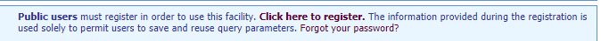
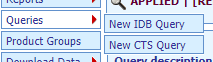

World Trade Organization data
Eduard Bukin
2017-09-03
The WTO website offers sophisticated options for researching members’ customs duty rates and in many cases imports. In particular, there are:
Tariff Analysis Online tool http://tao.wto.org/?ui=1;
Tariff Download Facility http://tariffdata.wto.org/Default.aspx?culture=en-US.
Regional Trade Agreement Information System (RTA-IS) http://rtais.wto.org/;
Trade data time series http://stat.wto.org/;
Miscellaneous information and overview of the all statistical sources of WTO are here: https://www.wto.org/english/res_e/statis_e/statis_e.htm.
Both tools allow assess to the same data about the trade policy, collected by WTO. Below, we will discuss both tools in more details.
Tariff Analysis Online (TAO)
This facility allows you to access the WTO’s Integrated Data Base (IDB) and Consolidated Tariff Schedules (CTS) database on-line, select markets and products, compile reports and download data.
Source
The TAO tool, could be accessed here: http://tao.wto.org/?ui=1.
How to access data
The data could be accessed after registration and log in-in. To register, press Click here to register () on the main page of the TAO website. Use registers log in and password to access the database.
The interface of the database is not very intuitive. To understand how to use it, see the guidlines and help.
General procedure of data access are the following:
Prepare a query either in IDB or in CTS databases ;
Insert main parameters of the query and save it:

Click
Basic queryand select the query you have saved from theSaved Querylist.Generate the report based on the selected query:

Data response
With the present tool, data could be returned as a report in browser or as an exported excel data file. For more information, try to use it, or see the help.
Tariff Download Facility
Source
Tariff Download Facility is located here: http://tariffdata.wto.org/Default.aspx?culture=en-US.
How to access data
Official guide of how to use the tool is here
Regional Trade Agreement Information System (RTA-IS)
This database contains information on only those agreements that have either been notified, or for which an early announcement has been made, to the WTO.
Source
RTA-IS is located here: http://rtais.wto.org/
Data access
The user interface allows you to access data on RTAs notified to the GATT/WTO in the following way:
- By country/territory;
- By criteria;
- List of all RTAs in force;
- List of early announcements;
- Pre-defined reports and Summary Tables containing WTO Figures on RTAs.
each of the options offers a list of links with more details on each specific agreement.
For more information see the user guide.
WTO measures and notifications
I-TIP Goods provides comprehensive information on non-tariff measures (NTMs) applied by WTO members in merchandise trade. The information includes members’ notifications of NTMs as well as information on “specific trade concerns” raised by members at WTO committee meetings. Its aim is to serve the needs of those seeking detailed information on trade policy measures as well as those looking for summary information. It includes links to the WTO’s extensive tariff and trade databases, and to DocsOnLine system.
Source
The tool is available at http://i-tip.wto.org/goods/Default.aspx.
Depends on what you need, select one of GRAPHS over TIME, TABLES by PRODUCTS, TABLES by MEMBERS, or a DETAILED QUERY. See how to for more information.
Data response
Data could be downloaded in pdf reports about the notification and measures applied by each country to a specific commodity.
Trade time series
WTO Statistics Database allows you to retrieve statistical information in the following presentations:
The Trade Profiles - provide predefined information leaflets on the trade situation of members, observers and other selected economies;
The Tariff Profiles - provide information on the market access situation of members, observers and other selected economies;
The Aid for Trade Profiles - provide information on trends of aid for trade, trade costs, trade performance and development for selected Aid for Trade recipients;
The Time Series section - allows an interactive data retrieval of international trade statistics.
Sourece
This data source if available here: http://stat.wto.org/
How to access data
All data is accessed in the similar way, following intuitive step by step process as on the picture below.

Miscellaneous information sources
WTO Trade policy Review https://www.wto.org/english/tratop_e/tpr_e/tpr_e.htm.
Copyright © 2017 Eduard Bukin. All rights reserved.